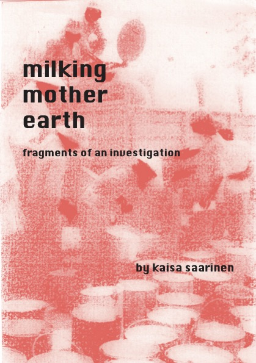

Milking Mother Earth
by Kaisa Saarinen
64 pages
Risograph printed on FSC certified 100% recycled paper.
Stitch bound by hand with 100% linen thread made in France.
This pamphlet is a free-wheeling interdisciplinary exploration of rubber, taking readers from Bangkok fetish bars to smallholder plantations in Vietnam, looking through history from European colonisation of the homelands of latex to Victorian british moral panics about sex toys made from the material.
Kaisa interweaves academic research with first hand accounts from her research trips and poetry both by herself and and others.
Throughout this journey, she contemplates the feminised life of rubber.
She speaks to women in the industry, considers the history of rubber dildos, finds womanhood in the poems of Vietnamese rubber laborers, and wonders what it means to milk mother earth.
This work is born out of notes from her ongoing research project and artistic collaboration with Bart Seng Wen Long, Rubber Dreams of its Lifetime.
Current UK Stockists:
- Housmans Bookshop, London
- Good Press, Glasgow
